Want a way to keep track of your daily tasks or workload? With todos, you will be able to list everything you need to get done and monitor your progress as you work through your tasks. Show below is the what the application looks like.
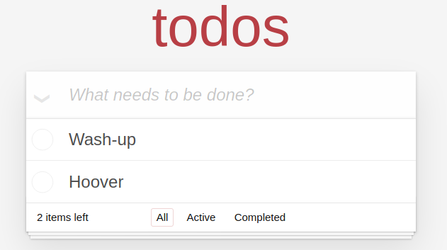To add a new item to your todo list, click on the box containing the text: "What needs to be done?". Then enter the text for your todo item and press enter to submit the todo to the list. The item will then be displayed or your applications list like the image below:
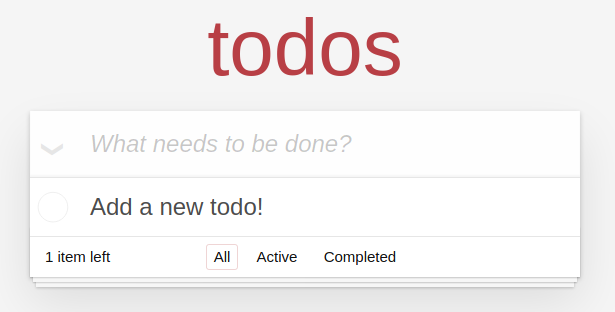After completing an item on your todo list you can mark it as complete by clicking on the empty circle to the left of the todo items text. To mark an item as incomplete tick the same box that contains a tick. The images below show a todo as incomplete and then when a todo has been completed.
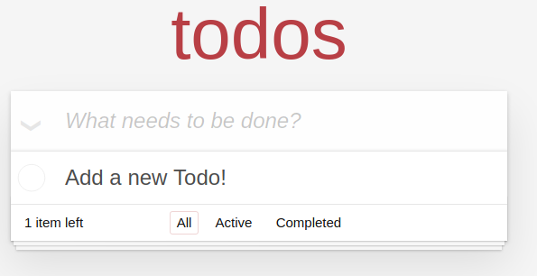 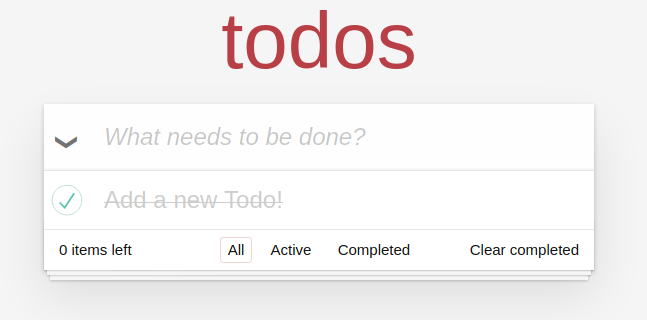To edit a todo item, double click on the text to be able to edit your todo. Next edit the text of your todo to your desired result and press enter to submit the changes.
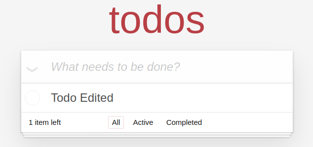When you have multiple items on your todo list and want to view only the incomplete items that you have left to do you can click the "Active" button to toggle the view. If you only want to view the items you have completed you can click the "Completed" button to toggle the view. Finally if you want to return the view to show all todos, both complete and incomplete you can click the "All button. Shown are images of the results when you change the view using these buttons.
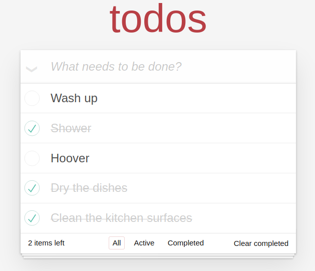 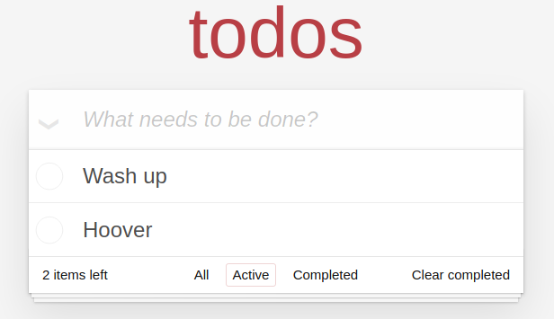 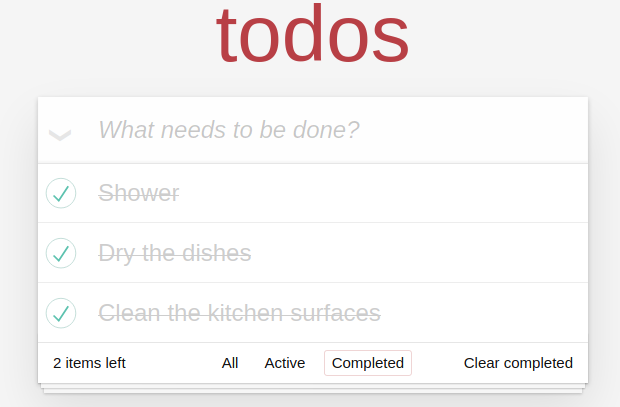To mark all todos completed or incompleted, by pressing the label above the completed tick boxes of the todos. When all todos are marked as completed this icon becomes black and is grey when there are todos left to be competed.
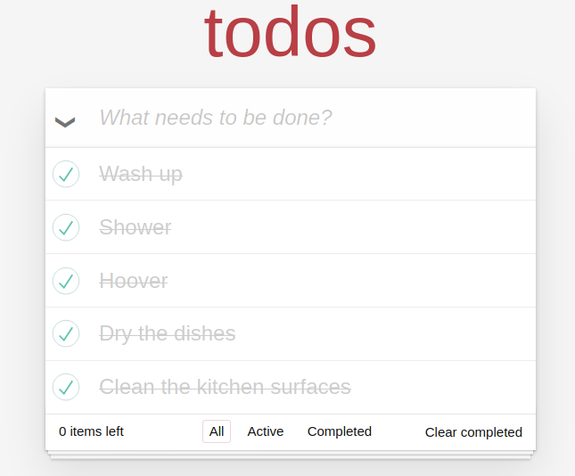 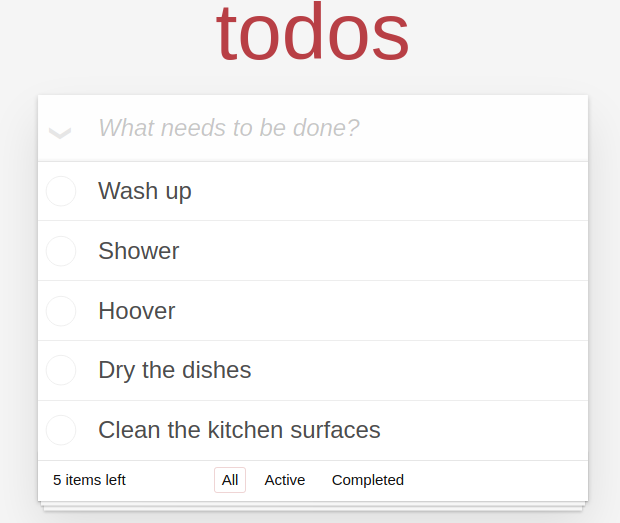Todos can be deleted by pressing the cross at the right hand side when you hover over the box containing a particular todo. Alternatively if you want to delete all todos you have completed, you can click the "Clear completed" button in the bottom right hand corner of the application. To clear all todos, marking all todos as completed using the toggle all button and clicking the clear completed button is the quickest method
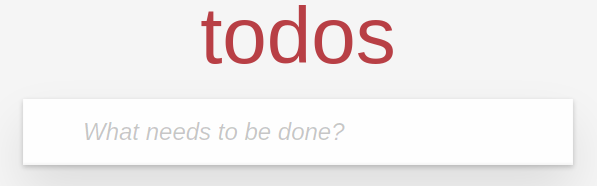Jasmine is a behavior-driven development framework for testing JavaScript code. By importing your project files into the Jasmine environment, you can create a model of your JS code and how it should function. With this model, you can create tests with certain expectations attatched to them. These tests can highlight to you when you have changed something in your codebase that has produced undesired results. Jasmine will inform you of the tests that fail and the lines of code that are not functioning correctly, allowing you to quickly get to the root cause of the problem.
Tests have been written for this project to test the functioning of key functions responsible for different application functionality. There are tests written for: the controller, routing , toggle all, new todo, element removal, remove completed, complete toggle, and edit item.
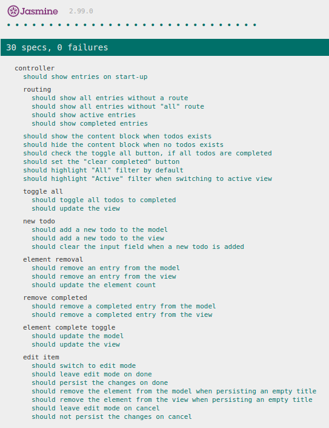This is a test for element removal that checks the JS functions responsible for removing an entry from the model are called when a particular event is triggered. In this example we are testing if the todo with id: 234, is removed from the model(data storage) when the event "itemRemove" is triggered. We check it is removed from the model by checking if model.remove has been called with the id of 234.
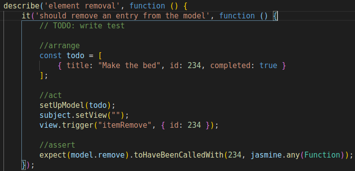The todos application uses a MVC(model, view, controller) system architecture. This divides up resonsibilty for key aspects of the application:
Overview of the MVC system architecture
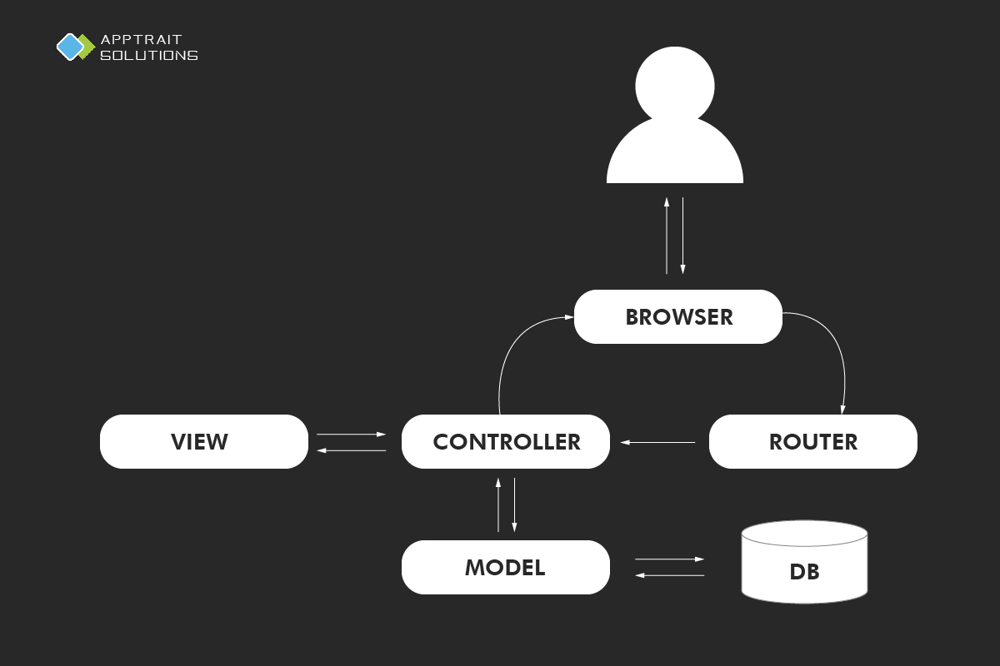The application also contains a template.js file which is responsible for providing templates for frequently created elements such as new todo items. It provides these templates to the view for insertion into the DOM.
The app.js file is the top level file that initialises the application.
The helper.js file is responsible for small helper functions such as adding event listeners and query selecting.
Sets up a brand new Todo list.
(string)
The name of your new to do list.
Takes a model and view and acts as the controller between them
An event to fire on load. Will get all items and display them in the todo-list
Renders all active tasks
Renders all completed tasks
Will remove all completed items from the DOM and storage.
Give it an ID of a model and a checkbox and it will update the item in storage based on the checkbox's state.
Updates the pieces of the page which change depending on the remaining number of todos.
Creates a new Model instance and hooks up the storage.
(object)
A reference to the client side storage class
Finds and returns a model in storage. If no query is given it'll simply return everything. If you pass in a string or number it'll look that up as the ID of the model to find. Lastly, you can pass it an object to match against.
(function)
The callback function to fire after the model is found
model.read(1, callback()); //will find the model with an ID of 1 and call the callback
model.read('1'); //same as above
model.read({completed: true}, removeCompletedItems()); //will find all models that are completed and remove them using the callback function
Updates a model by giving it an ID, data to update, and a callback to fire when the update is complete.
(number)
The id of the model to update
(object)
The properties to update and their new value
(function)
The callback to fire when the update is complete.
model.update(54321, {completed: true}, view.render("elementComplete", {id: 54321, completed: true}));
View that abstracts away the browser's DOM completely. It has two simple entry points:
(any)
This function contains 11 different functions that render different parts of the DOM
(string)
is used as a key to access the different render
functions e.g. "removeItem"
(any)
provides data for the function e.g. an elementId(number)
for the "removeItem" function
render("showEntries", {id: 54321, completed: true, title: "Shower"}); //parameter(object)
render("removeItem", 54321); //parameter(number) - id of element to be removed
render("updateElementCount", 5); //parameter(number) - number of active items
render("clearCompletedButton", {completed: 3, visible: true}); //parameter(object)
render("contentBlockVisibility", {visible: true}); //parameter(object)
render("toggleAll", {checked: false}); //parameter(object)
render("setFilter", "active"); //parameter(string) - "active", "completed" or ""
render("clearNewTodo"); //parameter(undefined) - no parameter required
render("elementComplete", {id: 54321, completed: true}); //parameter(object)
render("editItem", {id: 54321, title: "wash-uq"}); //parameter(object)
render("editItemDone", {id: 54321, title: "wash-up"}); //parameter(object)
This function contains 8 different functions, each accessed using a different event parameter as a key. Each function adds an event listener to different DOM elements
(string)
is used as a key to access the 8 different functions
(function)
is a callback function that is called when the event
listener is triggered
bind("newTodo", function(title){
self.addItem(title);
});
bind("itemEdit", function(item) {
self.editItem(item.id);
});
bind("itemEditDone", function(item) {
self.editItemSave(item.id, item.title);
});
bind("itemEditCancel", function(item) {
self.editItemCancel(item.id);
});
bind("itemRemove", function(item) {
self.removeItem(item.id);
});
bind("itemToggle", function(item) {
self.toggleComplete(item.id, item.completed);
});
bind("removeCompleted", function() {
self.removeCompletedItems();
});
bind("toggleAll", function(item) {
self.editItemSave(item.id, item.title);
});
Creates a new client side storage object and will create an empty collection if no collection already exists.
(string)
The name of our DB we want to use
(function)
Our fake DB uses callbacks because in real life you probably
would be making AJAX calls
Finds items based on a query given as a JS object
(object)
The query to match against (i.e. {foo: 'bar'})
(function)
The callback to fire when the query has completed
running
db.find({foo: 'bar', hello: 'world'}, function (data) {
// data will return any items that have foo: bar and
// hello: world in their properties
});
Will save the given data to the DB. If no item exists it will create a new item, otherwise it'll simply update an existing item's properties
(object)
The data to save back into the DB
(function)
The callback to fire after saving
(number)
An optional param to enter an ID of an item to update.
If left out, the function will create a new data entry
and generate a new unique id for it
save({title: "Wash-up", completed: false}, function () {
self.view.render("clearNewTodo");
self._filter(true);
}, undefined); //id parameter is undefined because a new todo is being saved in this case
save({completed: true}, function () {
self.view.render('elementComplete', {id: 54321, completed: true});
}, 54321); //id is present in this case as we are updating data for an existing todo item
Sets up defaults for all the Template methods such as a default template
Creates an HTML string with the data that is passed to the function and returns it for placement in your app.
(object)
The object containing keys you want to find in the
template to replace.
string: HTML String of an element
view.show({
id: 1,
title: "Washing-up",
completed: false,
});
Displays a counter of how many to dos are left to complete with the text changed when a single todo remains
(number)
The number of active todos.
string: String containing the count
itemCounter(3); //returns "<strong>3</strong> items left"
itemCounter(1); //returns "<strong>1</strong> item left"
Updates the text within the "Clear completed" button depending on number of completed todos
(number)
The number of completed todos.
string: String containing: "" | "Clear completed"
clearCompletedButton(0) // returns: ""
clearCompletedButton(1) // returns: "Clear completed"
Search and select a single element from the document or specified scope
(string)
with which to search the scope or document
(HTMLElement)
within which to search e.g. within the (ul.todo-list)
element. If no scope is present, the query selector will
instead search within the document
Search and select multiple elements from the document or specified scope
(string)
with which to search the scope or document
(HTMLElement)
scope within which to search e.g. within the
(ul.todo-list) element. If no scope is present, the
query selector will instead search within the document
This function adds an addEventListener wrapper:
(object)
the html element that that event listener is added to
(string)
the event type e.g. "click", "mouseover", "change"
(function)
the event listener callback function to be called when
the event is triggered
(boolean)
optional parameter that changes the order in which
multiple handlers for the same event are executed
$on(qs(".toggle-all"), "click", function(status) {
self.toggleAll(status.completed); //status = {completed: boolean}
}); //callback is triggered when .toggle-all has an event: "click"
Attach a handler to event for all elements that match the selector, now or in the future, based on a root element
(object)
the html element that that event listeners will be added
within, used as a scope for $qsa
(string)
to select elements with using the $qsa function
(string)
the event type e.g. "click", "mouseover", "change"
(function)
the event listener callback function to be called when
the event is triggered